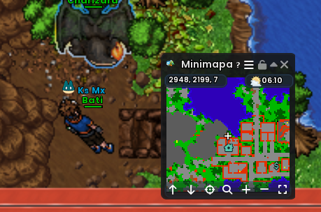

Viridian
Tierra · Giovanni📍 2948, 2199, 7
Entrada: Al norte del Centro Pokémon de Viridian.
Pokémon de la dungeon:
- Rhydon
- Kangaskhan
- Persian
- Dugtrio
- Nidoking
- Nidoqueen
Boss: Shiny Persian
Equipo ideal para la dungeon — Lucha
Shiny Machamp (SR), Shiny Hitmonlee (T1), Shiny Hitmonchan (T1), Shiny Heracross (T2), Hariyama (T2), Machamp (T2).
Contra el líder
Para el líder, prioriza Agua, Hielo, Planta y Tierra frente a su núcleo Ground; un equipo sólido puede mezclar Shiny Feraligatr, Shiny Vaporeon, Shiny Meganium, Shiny Venusaur, Glaceon y Shiny Piloswine.